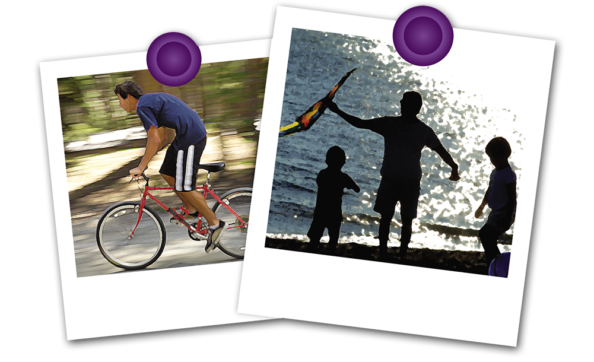

உணவு சம்பந்தப்பட்ட தொற்றா வியாதிகள்
(Diet related non- communicable diseases)
குறை போஷாக்கு பிரச்சினைகள் ஒரு புறமிருக்கஇ இலங்கை உட்பட, பல அபிவிருத்தி அடைந்து வரும் நாடுகளில், உணவு சம்பந்தப்பட்ட தொற்றா வியாதிகளின் (னுசு-Nஊனு) எண்ணிக்கை அதிகரித்துள்ளதாக அறியப்பட்டுள்ளது.
பல அபிவிருத்தி அடைந்து வரும் நாடுகள் ~குறை போஷாக்கின் இரட்டை சுமை| எனப்படும் குறை – நிறை போஷாக்கு விளைவுகள் மற்றும் உணவு சம்பந்தப்பட்ட தொற்றா வியாதிகளை எதிர்கொள்ள வேண்டி உள்ளது.
உணவு சம்பந்தப்பட்ட தொற்றா வியாதிகளில் பின்வருவனவற்றை குறிப்பிடலாம்.
- சர்க்கரை வியாதி
- இதய நோய்கள் மற்றும் பாரிசவாதம்
- உயர் இரத்த அழுத்தம்
- சிறு நீரகத்துடன்தொடர்பான நோய்கள்
- புற்று நோய்

உடல் பருமன் அதிகரிப்பு இலங்கையின் நகர்ப்புறங்களிலும், பெரும்பாலான பள்ளிச் சிறார்களிடம் காணப்படும் பிரச்சினையாகும். சுகாதாரமற்ற பழக்கங்களினாலும், சரீர உழைப்பற்ற வழக்கங்களினாலும் இவ்வகையான பிரச்சினைகள் ஏற்படலாம்.
சுகாதரமான உணவு முறையுடன் சேர்ந்த உடற்பயிற்சியும் தான் ஆரோக்கியமான நல் வாழ்வுக்கு அடித்தளம். பள்ளி மாணவர்களிடையே போஷாக்கு பற்றிய விழிப்புணர்வை ஏற்படுத்துவதே உணவு சம்பந்தப்பட்ட தொற்றா வியாதிகளைக் கட்டுப்படுத்த சரியான முறை.